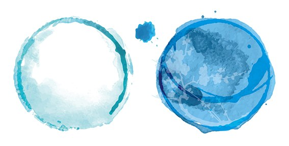

— what is a good life —
〜 いい人生とは 〜
scroll ↓
いい人生とは自由であること妻や子どもたちとたくさん笑い、話し、過ごす時間があること自身の感情や行動が他者の態度や行動に左右されないこと異なる見え方や描き方に魅了され、自身の変化を楽しむこと時間に縛られず回り道をすること富や名声は目的ではなく、手段であること自身の答えに振り回されず、敬意を持って人の話を聞き、相手を理解すること見栄を張らず、良心を体現すること人生を義務と考えず、笑って目を輝かせて歩むこといいものを見つけたとき、出会った人に分けてあげて、一緒に喜ぶこと遊ぶことで 人生を彩ろう
— NOCTA
← 右から左へ、指でたどれます
遊ぶことで 人生を彩ろう— NOCTA
Кто это?（これはなに?）
photo 01
photo 02
Personal
東京生まれ東京育ち。関西弁に憧れて関西へ行き自分を捨てられるようになりました。また、2015年まで秋田に赴任していました。食べ物の美味しさと人のやさしさに感動し、いつかは田舎に住むのを夢みています。子供ができたことで、よりいっそう仕事以外の人生に興味を持ち、今を生きようと思いました。どうぞよろしくお願いいたします。
Hobby
読書 | アニメ | 漫画 | 旅行 | 夏フェス | 日本酒 | ポケモン
SFや児童小説、自己啓発の本が好きです。自己啓発の本の中では、NVCとThe Artist's Wayにはまっています。が、興味がころころ変わるので、次に書くときは別のものになっているかも。アニメは深夜アニメを、漫画も何でも読みます。旅行が好きで、気が付くと日本一周していました。海外旅行も年に一度は行っていました。子供ができたことで人生のZ軸ができ、より人生が彩られました。
— colors & strengths —
色と、強みと、性格と。
Color
色の自己表現
瓶覗かめのぞき
好きな色：瓶覗（かめのぞき）色#A2D7DD ・ Pale aqua
藍染のなかで、いちばん淡い色。藍瓶にほんの少し浸すだけで染まる、空を映した水のような青。

私は瓶覗色です。
瓶に水が張ってあり、そこに映る空の色を覗き見るように、私と関わる物や人すべてを覗き見ては儚く消えていく、その見た時の一瞬の喜びを、ふと見つけた何か捉えどころのないふんわりした印象を感じさせます。
Strengths
ストレングスファインダー 上位 5 つ
Woo社交性（Winning Others Over）
Input収集心
Learner学習欲
Strategic戦略性
Positivityポジティブ
16 Personalities
ENFP 運動家
好奇心と情熱で、人や新しいことに飛び込んでいくタイプ。可能性を見つけると、わくわくして周りも巻き込みます。
16Personalities で ENFP 型を読む ↗
words that move me
感動した言葉を、流れるように。
触れると止まります
感動を書く
脳の整理。出会いとのわくわく。感動し乗り越えろ。
elsewhere